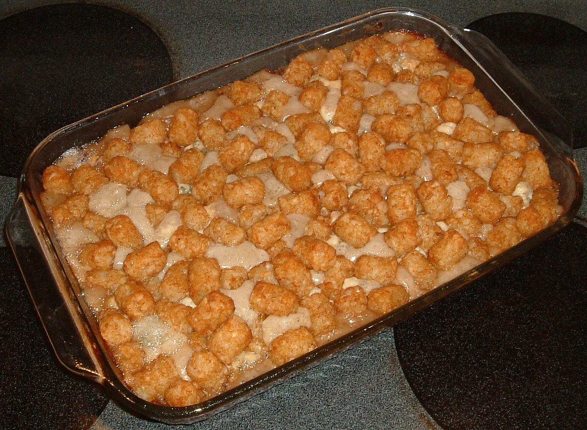

Tater Tot Casserole

Tater Tot Casserole 3 by Chuck Robinson, used under CC BY-NC 2.0
Description
Tater Tot Casserole is a quick and easy dinner that everyone will love. Just four basic ingredients come together for this comforting dish.
Prep Time: 5 minutes | Cook Time: 40 minutes | Total Time: 45 minutes
Source: allrecipes
Ingredients
- 1 pound ground beef
- 1 (10.5 ounce) can condensed cream of mushroom soup
- salt and ground black pepper to taste
- 1 (16 ounce) package frozen tater tots
- 2 cups shredded Cheddar cheese
Steps
- Gather the ingredients.
- Preheat oven to 350 degrees F (175 degrees C).
- Heat a large skillet over medium-high heat.
- Cook and stir ground beef in the hot skillet until completely browned and crumbly, 7 to 10 minutes.
- Stir in condensed soup; season with salt and black pepper.
- Transfer beef mixture to a 9x13-inch baking dish; layer tater tots evenly on top and sprinkle with Cheddar cheese.
- Bake in the preheated oven until tater tots are golden brown and hot, 30 to 45 minutes.
- Place in the prepared baking dish and sprinkle chicken evenly with bread crumbs.
- Serve and enjoy!
Home